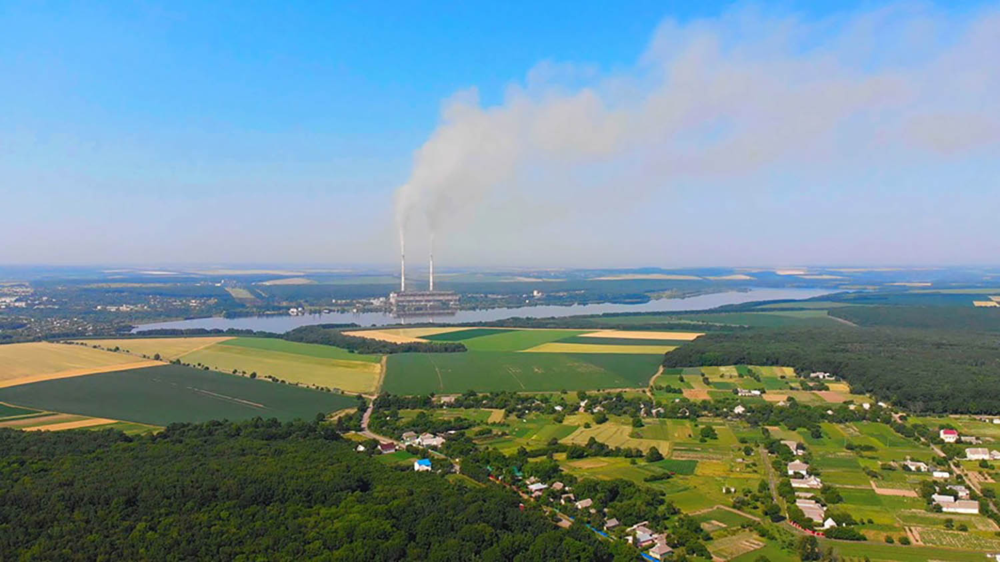
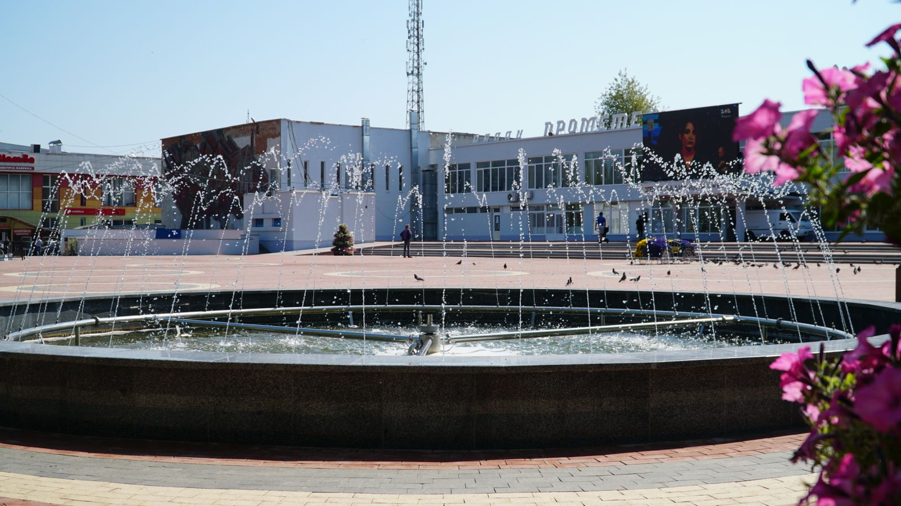

В 1973 році Ладижин отримав статус міста, а 19 жовтня 2000 року - статус міста обласного значення. З 2001 року в місті відбулося багато змін. В Ладижині створено підрозділи державних структур, які необхідні людям для нормальної життєдіяльності, а саме: санепідемстанцію, пенсійний фонд, суд, прокуратуру, відділ міліції, відділ земельних ресурсів, управління юстиції, відділення податкової інспекції, ветеринарну службу, казначейство, відділ контрольно-ревізійного управління, відділ статистики. Розпочато та завершено газифікацію старої частини міста; проведено газ у с. Лукашівка та сел. Губник. Змонтовано в 2006 році нову цифрову АТС, яка надала можливість встановити ладижинцям додатково 2200 телефонів, що повністю вирішило проблему телефонізації в Ладижині. Здійснено будівництво газових опалювальних пунктів у будинку культури «Лада», ЗОШ №1, ЛТЦСо, дошкільному закладі «Барвінок». Відкрито комунальні підприємства «Міська аптека», газета «Нове місто», «Ладжитлосервіс», «Ладижинський комбінат комунальних підприємств», «Міський ринок», які наповнюють міський бюджет коштами. На базі цих комунальних підприємств створені нові робочі місця. У місті функціонує коледж Вінницького національного агарного університету, 3 загальноосвітні школи І-ІІІ ст., 2 навчально-виховні комплекси та 8 дошкільних виховних навчальних закладів. На базі дитячого садочка «Росинка» створено центр педагогічної реабілітації та соціальної адаптації дітей із вадами опорно-рухового апарату та порушенням мовлення, який фінансується за рахунок коштів міського бюджету. На території міста функціонують шість клубних закладів, дві бібліотеки, музична школа, дві дитячі спортивні школи, міжшкільний навчально-виробничий центр «Спадщина» та територіальний центр із соціального обслуговування. У місті започатковано традицію - урочисто вітати першого малюка, народженого в новому році. Медична галузь у місті розвинута на високому рівні. У 2017 році створено два комунальних підприємства «Ладижинський міський центр первинної медико-санітарної допомоги» та «Ладижинська міська лікарня» на 85 ліжок, які обслуговують та надають необхідну медичну допомогу населенню м. Ладижина, сел. Губника та с. Лукашівки. У селі Лукашівка функціонує ФАП, у селищі Губник – здоровпункт. Щорічно в Ладижині проводиться обласний дитячий конкурс-фестиваль сучасної пісні і танцю «Подільський первоцвіт», який сприяє розвитку дитячих талантів. Вперше конкурс пройшов у 1998 році. У Ладижині організовуються прекрасні сучасні свята. Жителі міста не уявляють свят без чудових феєрверків, концертів професійних артистів, ярмарків, різноманітних виставок. У 2001 році в Ладижині започатковано важливе для жителів свято – День міста. Запроваджено звання «Почесний громадянин міста Ладижин». Створено герб і прапор міста Ладижин. Проведена значна робота із залучення інвестицій в економіку міста. Як результат, у 2007 році досягнута домовленість з ПАТ «Миронівський хлібопродукт» про початок у 2010 році будівництва нових виробничих потужностей підприємства та житлових будинків на землях міської ради загальною вартістю – 1,5 млрд. доларів США. Так, із 2012 року на території Ладижинської міської ради розпочав роботу Ладижинський виробничий комплекс ПАТ «Миронівський хлібопродукт», який об’єднує потужності з виробництва м`яса птиці, комбікормів і зернозаготівлі. Продукція цього підприємства експортується у 60 країн світу. У місті сприятливий інвестиційний клімат, створені необхідні умови для впровадження інвестицій та розвитку бізнесового середовища. Завдяки діяльності двох потужних інвесторів ПАТ «Миронівський хлібопродукт» та ПАТ «ДТЕК Західенерго» в місті реалізовано багато суттєвих соціальних проектів. У Ладижині діє Агенція місцевого економічного розвитку (АМЕР), яка розробляє програми та проекти, направлені на поліпшення рівня життя громади міста, сприяє впровадженню актуальних програм та проектів, розвитку малого і середнього бізнесу, формуванню енергозберігаючої політики. АМЕР плідно співпрацює з інвесторами та підприємцями міста. В рамках реалізації Стратегії соціального партнерства компанії ДТЕК і міста Ладижин, Агенцією місцевого економічного розвитку створено «Фонд підтримки підприємництва». Міська рада, підприємства міста, Агенція місцевого економічного розвитку постійно беруть участь в інвестиційних ярмарках, форумах, виставках та навчаннях з метою залучення інвестицій. Встановлено міжнародні дружні контакти. У 2003 році підписано Угоду про співробітництво з польським містом Коло. Наші головні дипломати – діти – неодноразово, з метою участі у спортивних змаганнях, екологічних навчаннях, демонстрації своєї творчості, їздили до Польщі. Ладижинці радо зустрічають закордонних гостей у своєму рідному місті. З 2017 року у місті проводиться міжнародний дитячий футбольний турнір пам’яті П.І.Кривохижі – легендарного тренера ладижинської футбольної команди «Авангард». У турнірі беруть участь команди з міст Коло (Республіка Польща), з Одеси, Бурштина, Добротвору, Щастя, Курахова, Ямполя. Турнір набув статусу традиційного. З 2008 року у місті проводиться конкурс «Людина року». За 13 номінаціями визначаються переможці – кращі ладижинці, які досягли значних професійних успіхів у різних галузях.
Наразі до складу міської ради входить 6 населених пунктів: місто Ладижин, село Лукашівка, село Заозерне, село Василівка, селище Губник та хутір Ружицьких. Місто Ладижин займає перше місце в області за обсягами промислового виробництва. В 2022 році промисловими підприємствами міста вироблено продукції на загальну суму 36,8 млрд. грн. Найбільшу питому вагу щодо темпів економічного зростання та випуску обсягів продукції мають підприємства агроіндустріального холдингу «Миронівський хлібопродукт». Містоутворюючим підприємством являється ВП «Ладижинська ТЕС» АТ «ДТЕК Західенерго», тому Ладижин по праву вважається містом енергетиків. Ладижинці першими в Україні перемогли бюрократичний підхід у формуванні місцевого бюджету, розмістивши кошти громади у комерційному банку на депозитний рахунок та отримавши в міський бюджет додаткові надходження за банківськими відсотками. Місто Ладижин має вагомий потенціал розвитку, який забезпечується великою ресурсною базою будівельних матеріалів, енергетикою, базою трудових ресурсів - кадрів високої кваліфікації. Це обумовлює розвиток нових пріоритетних галузей промисловості. На території Ладижинської міської ради здійснюють свою виробничу діяльність підприємства потужного інвестора ПрАТ «Миронівський хлібопродукт», а саме : філія «Переробний комплекс» ТОВ «Вінницька птахофабрика», філія «Внутрішньогосподарський комплекс по виробництву кормів» ТОВ «Вінницька птахофабрика», філія «Птахокомплекс» ТОВ «Вінницька птахофабрика».
На головну >